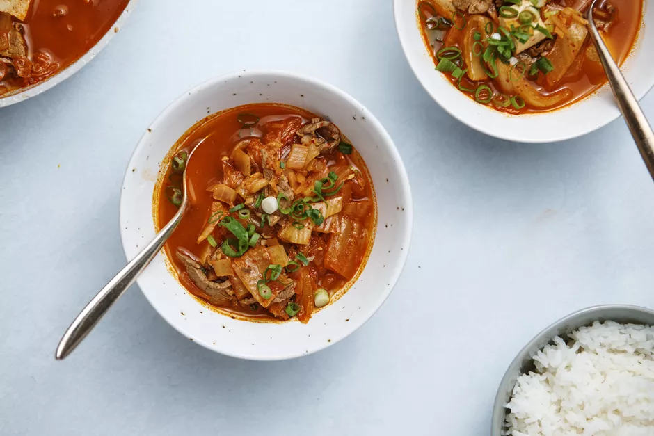

Spicy Kimchi Jjigae

Description
Kimchi jjigae (kimchi stew) is a Korean dish made with kimchi
(a spicy, pickled cabbage), and other ingredients such as beef,
onions, garlic, and tofu. It is hearty, flavorful, and very spicy.
It is served with white rice to help balance out the heat.
Ingredients
- 1 tbs sesame oil, divided
- 3/4 lb beef (such as sirloin), thinly sliced
- 2 cups kimchi (preferably with napa cabbage), roughly chopped
- 1/2 medium onion, chopped
- 2 cloves garlic, finely chopped
- 1 tbs gochujang, or Korean hot pepper paste
- 1 tbs gochugaru, or Korean red chile flakes
- 1 tbs soy sauce
- 3 cups water
- 1/2 (14-ounce) block firm tofu, cubed
- 2 scallions, chopped
- steamed rice, for serving, optional
Steps
- Gather the ingredients.
- Place 1/2 tablespoon of the sesame oil in a soup pot over medium-high
heat; once hot, add the beef and saute for a few minutes.
- Add kimchi to the pot and stir-fry for about 5 minutes.
- Add the remaining oil, onion, garlic, gochujang, gochugaru,
and soy sauce, mixing to combine. Pour the water into the pot and bring
to a boil. Reduce the heat to a simmer.
- Cook for 10 minutes and add the tofu.
- Continue cooking for another 10 to 20 minutes, adding the scallions
at the very end.
- Serve the stew immediately, accompanied by steamed white rice if you like.